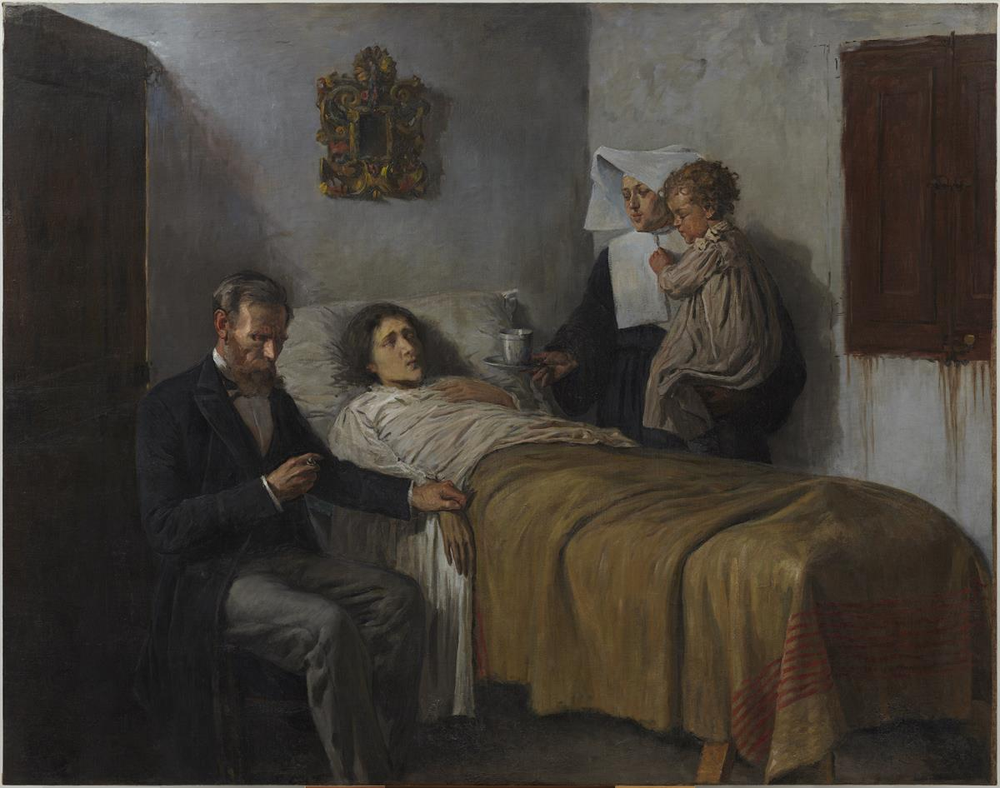

28:52 · 1 OPERA
Manipolazione emotiva a mezzo stampa...
Il filo del discorso
Dr Divago esamina una serie di titoli e immagini che riferisce alla pagina online del Corriere del 13 novembre 2020, proponendoli come esempi di comunicazione costruita sull’emozione. Il suo interrogativo riguarda la selezione delle storie di malattia e lutto: perché alcune testimonianze diventano centrali nel racconto pubblico, mentre altre sofferenze rimangono meno visibili? Da questa domanda passa alla contrapposizione fra immagine di autorevolezza e verifica dei fatti, con un richiamo a Galileo. Il caso delle cure di Donald Trump introduce una critica alle diseguaglianze nell’accesso alle risorse sanitarie. La parte successiva contesta la presentazione dei vaccini allora in sviluppo, invoca tempi di osservazione e ricorda lo scandalo del Contergan; si tratta di affermazioni del relatore, alcune inesatte o non dimostrate, da leggere nel contesto del novembre 2020. Il discorso collega poi restrizioni, precarietà e sicurezza del reddito, temendo una trasformazione autoritaria della tutela sanitaria. Il finale torna alla rappresentazione del dolore: Scienza e carità di Picasso viene proposta come immagine della cura che unisce competenza e compassione. La scheda conserva la domanda etica sul trattamento mediatico delle persone, distinguendola dalle conclusioni epidemiologiche, cliniche e giuridiche avanzate nel video.
I libri nel discorso

Scienza e carità. Science and Charity
Riproduzione del dipinto: Dipinto a olio su tela, Barcellona, 1897, 197,5 × 250 cm; Museu Picasso, inventario MPB 110.046, dono di Pablo Picasso nel 1970. Riproduzione del dipinto, non copertina di un libro.
Immagine autentica dell’intero dipinto dalla scheda museale: medico a sinistra, malata nel letto, suora con bambino a destra. Non è uno studio preparatorio, una copertina libraria o una fotografia dei fotogrammi del video. Il catalogo identifica l’opera descritta, non certifica il file mostrato dal relatore.
Pablo Picasso, Scienza e carità, 1897, titolo e data espliciti e descrizione del medico e della suora accanto alla malata.
Passaggio 27:57 ↗ · Fonti e libro ↗